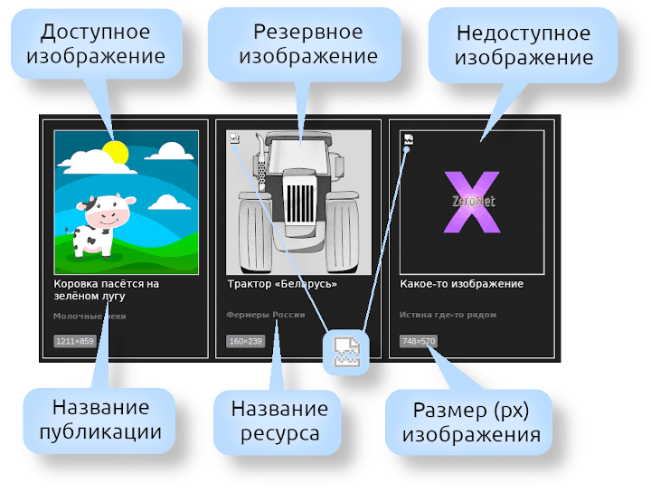
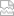

Поиск изображений
Общие правила поиска:
- Для ввода ключевых слов используют существительные, прилагательные и глаголы. Регистр букв не учитывается.
- Для чистоты поиска не рекомендуется использовать наречия, предлоги, союзы и междометия. Если же на странице выдачи всё-равно много лишнего, попробуйте конкретизировать запрос, используя только существительные.
Псевдооператоры:
- Поиск изображений в приблизительном геометрическом размере (в пикселях, px):
- `1x` — от 1px до 300px (самый мелкий);
- `2x` — от +300px до 600px (мелкий);
- `3x` — от +600px до 1200px (средний);
- `4x` — от +1200px до 3000px (крупный);
- `5x` — от +3000px до 7000px и выше (самый крупный).
- Поиск изображений по цветовому тону:
- `red` — красный;
- `ora` — оранжевый;
- `yel` — жёлтый;
- `gre` — зелёный;
- `blu` — синий, голубой;
- `pur` — фиолетовый;
- `pin` — розовый;
- `bro` — коричневый;
- `bla` — чёрный;
- `gra` — серый;
- `whi` — белый.
- Поиск монохромных изображений:
- `mch` — все типы монохромных изображений;
- `mbg` — чёрно-белые фотографии, а также фото/изображения, переведённые из цветных в серый цвет, включая тонированные (сепия и прочая обработка);
- `mst` — полутоновые изображения;
- `mdo` — бинарные изображения;
- `mir` — инфракрасная фотография, а также изображения, переведённые в инфракрасный цвет;
- `pxl` — пиксельная графика (и производные).
- Поиск изображений GIF/PNG:
- `gpt` — изображения с прозрачным фоном;
- `gpa` — анимированные изображения («гифки» и aPNG).
- Общий количественный просмотр изображений в базе:
- class — показать все изображения в базе;
- NICK@ — показать изображения по авторскому признаку (где NICK — никнейм пользователя, например, vasy@). Будут показаны изображения искомого пользователя, которые он загрузил в ZeroNet (блоги, форумы, сайты и пр.).
- Комбинирование псевдооператоров с ключевыми словами с целью релевантности запросов. Примеры:
- корова `3x` `ora` — найти изображения средних размеров (`3x`), на которых изображены оранжевые (`ora`) коровы (корова) (найденные «оранжевые коровы средних размеров» будут размещены в верхних позициях результатов поиска, остальные — внизу);
Примечание: для краткости псевдооператоры можно записывать в одну строку без пробелов и лишних апострофов, например корова `3x`ora`
- кошки `1x`gpa` — найти маленькие (`1x`) анимированные (`gpa`) изображения с кошками (кошки) и разместить их в верхних позициях результатов поиска;
- осень `mbg` — найти чёрно-белые (`mbg`) фотографии с осенним (осень) пейзажем и разместить их в верхних позициях результатов поиска;
- трактор vasy@ — найти изображения с тракторами, причём в верхних позициях результатов поиска должны отображаться картинки с тракторами пользователя Васи.
__________
* Все псевдооператоры (кроме class и NICK@) заключёны в обратные апострофы (обратный апостроф ставится клавишей Ё в английской раскладке).
Страница с результатами поиска изображений:

- Доступное изображение — оригинальное изображение с сайта автора (при условии, что этот сайт скачан и лежит у вас в директории ZeroNet).
- Резервное изображение — запасное лёгкое изображение в серых тонах. Резервное изображение отображается в том случае, когда оригинальное недоступно по причине отсутствия сайта автора в вашей директории ZeroNet или автор удалил изображение. Запасная картинка берётся с сайта ChronCache — если этот сайт не загружен, резервное изображение не отобразится.
- Недоступное изображение — вместо изображения будет показан логотип Хроникуса на чёрном фоне. Причины отсутствия оригинального изображения: 1) не загружен сайт автора; 2) автор удалил изображение; 3) другие причины. Причины отсутствия резервного изображения: 1) не загружен сайт ChronCache; 2) резервное изображение отсутствует на сайте ChronCache.
-  (значок в виде разорванного листочка; на примере браузера Firefox) — сигнализирует, что оригинальное изображение не загружено.
- Название публикации и Название ресурса — отображаются в виде ссылки на публикацию, в которой содержится данное изображение.
- Размер (px) изображения — отображение размеров картинки в пикселях: ширина×высота. Щелчок по кнопке (Ctrl-клик) открывает изображение в новой вкладке браузера.